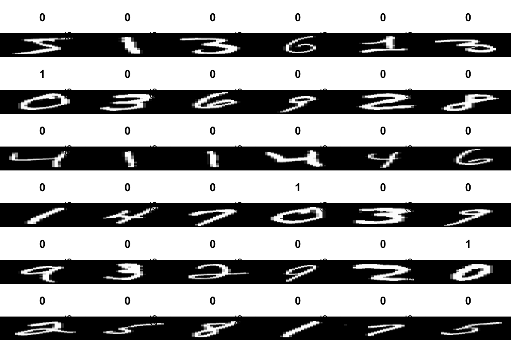

Image classification is the process of categorising images into predefined classes or categories based on their visual features. It plays a crucial role in various applications such as medical diagnosis, object recognition, and autonomous driving. With the increasing availability of digital images, the need for accurate and efficient image classification has become more important than ever.
Machine learning has revolutionised the field of image classification by enabling the development of automated classification systems that can learn from data. Machine learning algorithms can automatically learn the visual features that distinguish between different classes of images, and then use this knowledge to classify new images. With the development of deep learning algorithms, such as Convolutional Neural Networks (CNNs), image classification has achieved unprecedented levels of accuracy and performance.
R also has a number of packages that can be used for image classification. These packages provide a range of machine learning and deep learning algorithms, as well as tools for image processing and feature extraction. In this table, we summarise some of the most popular R packages that can be used for image classification, along with their key features.
25.2 Am R Example
The MNIST dataset is a popular benchmark dataset for image classification tasks in computer vision. It consists of a large set of 70,000 grayscale images of handwritten digits (0-9), each of size 28x28 pixels. The images are split into a training set of 60,000 images and a test set of 10,000 images.
The MNIST dataset is considered a relatively easy dataset, with high-quality images and well-defined classes. However, it remains a challenging dataset for some machine learning models, especially those with limited capacity or prone to overfitting. As a result, the MNIST dataset has become a popular benchmark for evaluating the effectiveness of different data preprocessing techniques, regularisation methods, and model architectures.
In this example, we will use the dataset_mnist() function from TensorFlow to load the MNIST dataset.
library(keras)library(tensorflow)# Load the datamnist<-dataset_mnist()x_train<-mnist$train$x/255y_train<-mnist$train$yx_test<-mnist$test$x/255y_test<-mnist$test$y# Reshape the datax_train<-array_reshape(x_train, c(nrow(x_train), 28, 28, 1))x_test<-array_reshape(x_test, c(nrow(x_test), 28, 28, 1))# One-hot encode the labelsy_train<-to_categorical(y_train, num_classes =10)y_test<-to_categorical(y_test, num_classes =10)# Convert labels to categoricallabels<-to_categorical(y_train, num_classes =10)# Display the imagespar(mfcol=c(6,6))par(mar=c(0, 0, 3, 0), xaxs='i', yaxs='i')for(idxin1:36){im<-x_train[idx,,,1]im<-t(apply(im, 2, rev))image(1:28, 1:28, im, col=gray((0:255)/255), xaxt='n', main=paste(y_train[idx]))}

Data augmentation Data augmentation is a technique commonly used in image processing to increase the size of the training dataset by generating new, slightly modified versions of the original images. The goal of data augmentation is to reduce overfitting and improve the generalisation performance of machine learning models.
Data augmentation can be applied to images in many ways, including rotating, scaling, cropping, flipping, translating, or adding noise to the original images. By applying these transformations to the original images, the machine learning model is exposed to a larger set of training data that includes variations in lighting conditions, object orientation, and object position. As a result, the model becomes more robust to variations in the test data, which improves its ability to generalise to new, unseen examples.
We will use data augmentation techniques to generate additional training data and reduce overfitting. In this example, we will perform random rotations, random zooms, and random crops.
# Set up the data augmentation generator:datagen<-image_data_generator( rotation_range =15, zoom_range =0.1, width_shift_range =0.1, height_shift_range =0.1)datagen%>%fit_image_data_generator(x_train)
We will use a simple Convolutional Neural Network (CNN) with 2 convolutional layers and 2 fully connected layers.
In this text classification example, we have successfully demonstrated the process of loading, preprocessing, and augmenting the MNIST dataset using R, Keras, and TensorFlow. We have implemented a simple Convolutional Neural Network (CNN) model for classifying handwritten digits from the MNIST dataset.
We utilised data augmentation techniques, such as random rotations, zooms, and translations, to improve the model’s performance on unseen data by generating additional training samples. This helps in mitigating overfitting and increasing the model’s generalisation capabilities.
After training the model, we performed predictions on the test dataset and evaluated its accuracy. We also visualised some of the predictions to gain insights into the model’s performance.